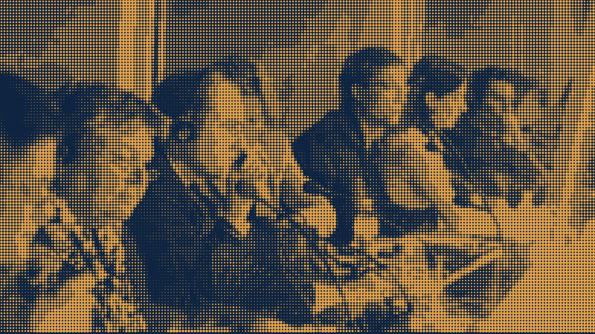

Un escaneo o una foto legible, y el idioma de destino.
Alcance, plazo y valor antes de empezar.
Un traductor firma la declaración de fidelidad.
En PDF o impreso, según lo pida la institución.
Documentos y eventos se coordinan en un solo lugar, desde Quito.
[Alcance por confirmar con Bridge.]
Alcance, plazo y valor antes de empezar.
Espacio privado y borrado automático.

Interpretación simultánea y consecutiva para congresos, reuniones y audiencias.
Fotografía provisional tratada como trama de puntos de la marca.